Swaying
A gentle lean guides the screen back toward the user’s line of sight.
RO-MAN ROBOT DESIGN COMPETITION / 2026
A Plant-inspired Tracking and Intelligent Laptop Teammate for Implicit Posture Correction
THE IDEA
Long desk sessions often lead to unconscious slumping, lateral leaning, and neck strain. TILT counters these small shifts with an ambient movement language: it leans, rises, or turns the screen toward a more comfortable viewing position.
MECHANICAL SYSTEM
A compact three-axis mechanism gives the laptop platform pitch, roll, and yaw. The final architecture combines the motors, camera, electronics, and power system in a low-profile base.
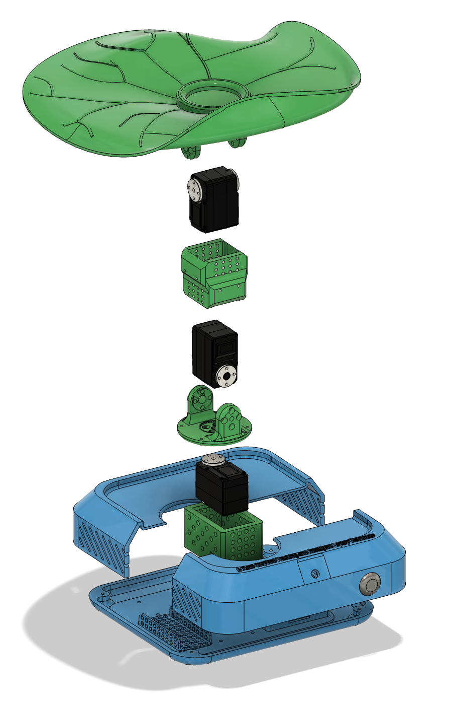
MOTION ARCHITECTURE
A gentle lean guides the screen back toward the user’s line of sight.
The platform rises to help restore a neutral viewing height.
The display turns aside to invite a restorative break.
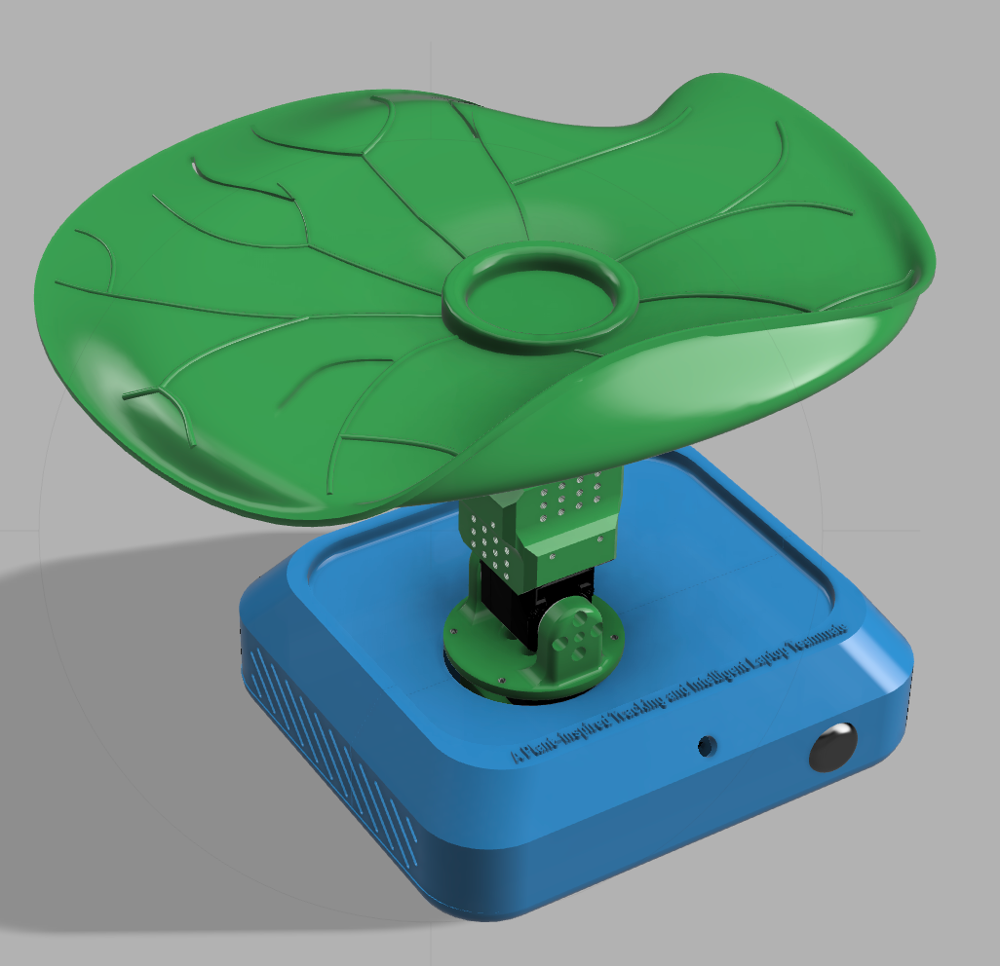
FORM LANGUAGE
The sculpted top plate brings softness to a technical object, while the blue base references water. Together, they make TILT feel less like a machine and more like a responsive desk companion.
INTERACTION
Camera-based posture sensing is paired with small, understandable movements—providing feedback without a notification, alarm, or command.
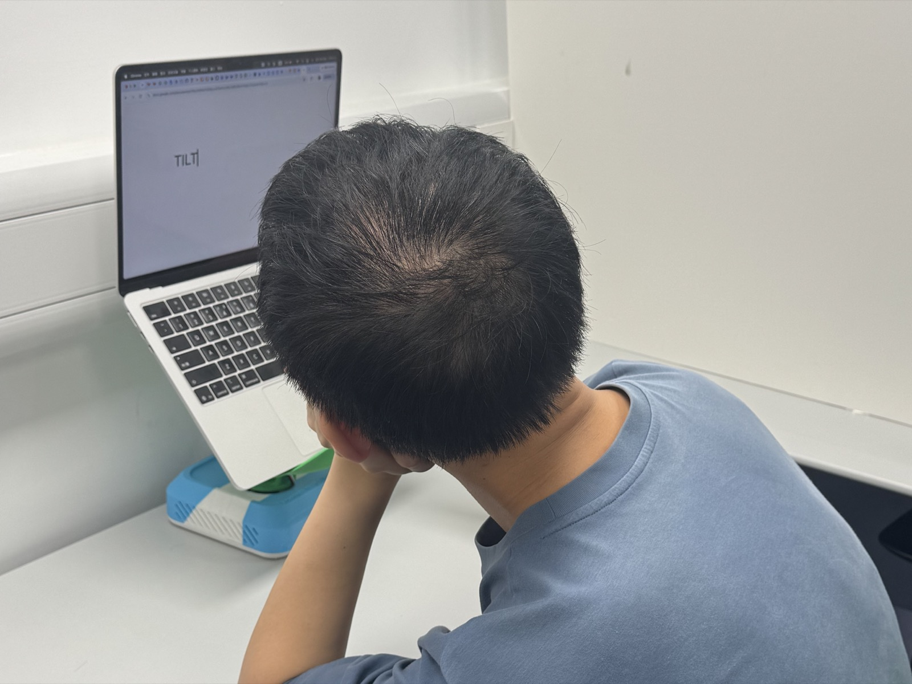
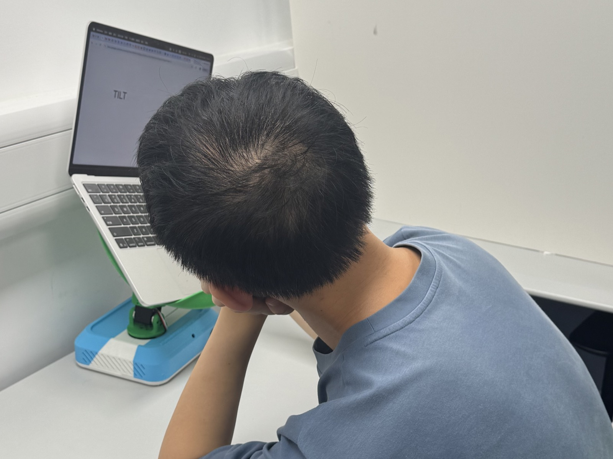
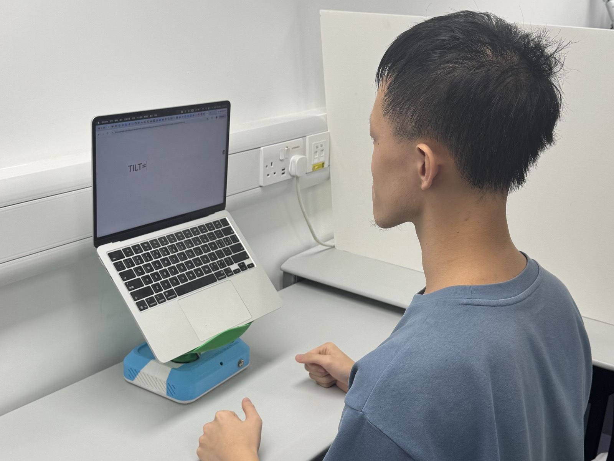
TILT leans in the opposite direction, helping return the screen to the user’s line of sight.
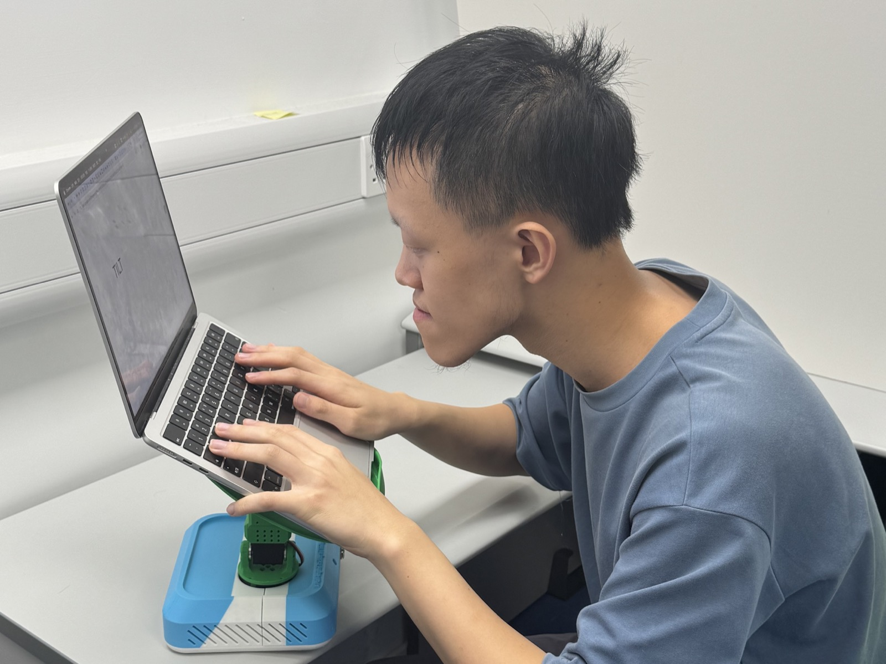
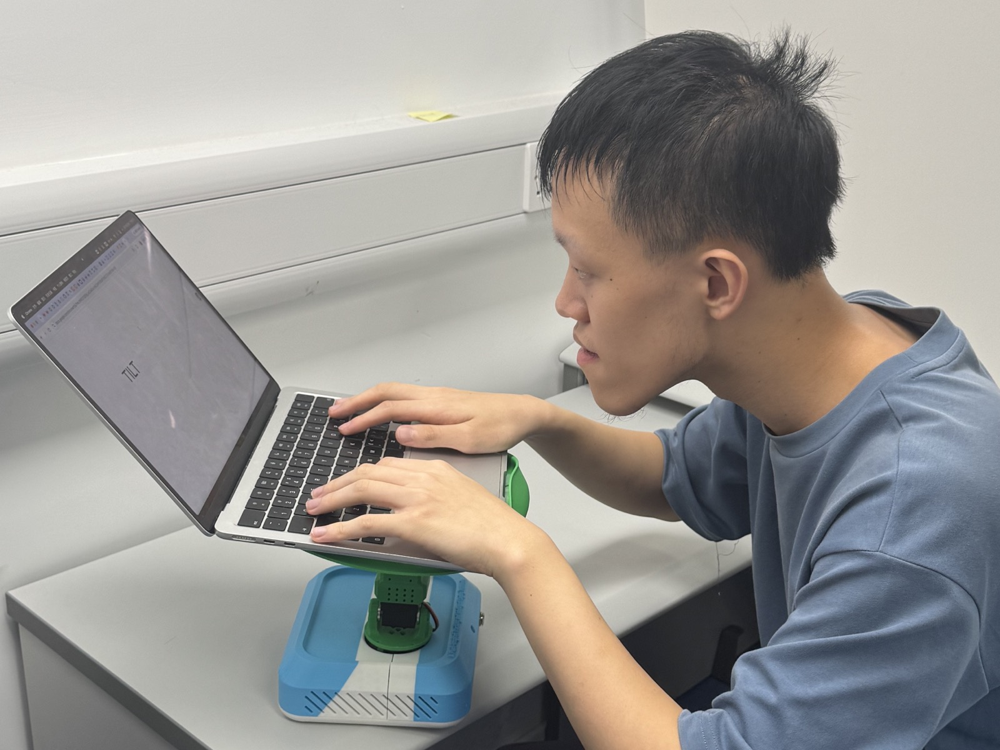
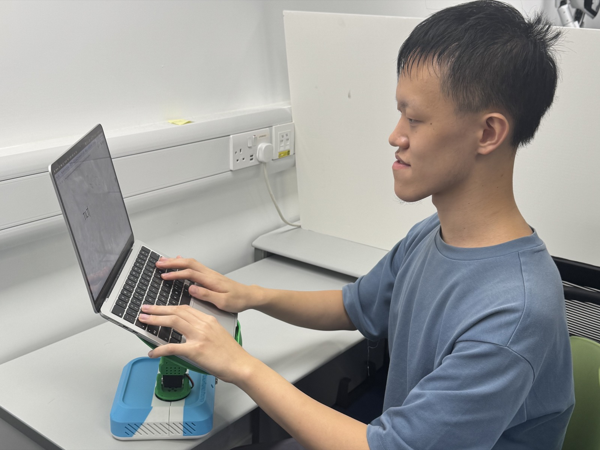
TILT rises with the user so the display remains easy to see while posture is readjusted.
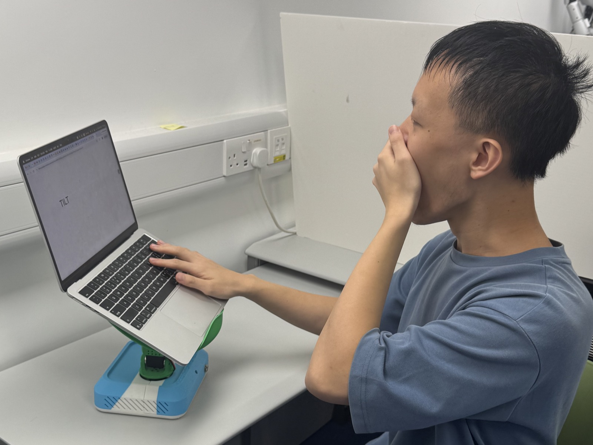
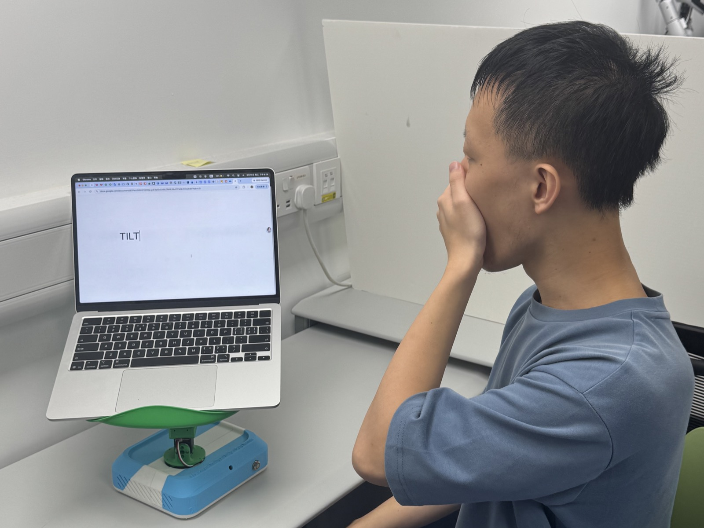
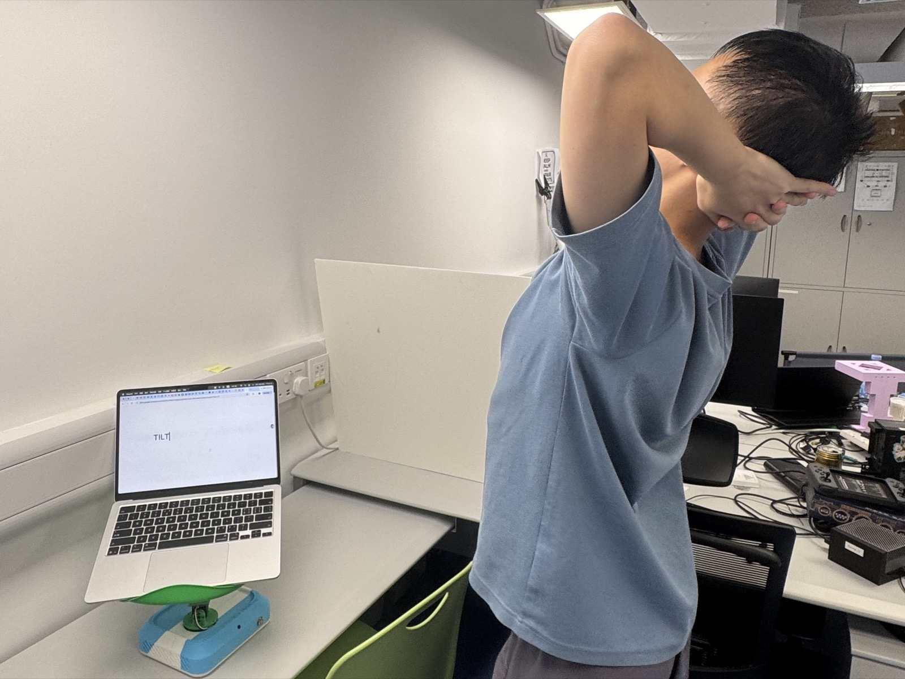
TILT turns aside to signal a break, inviting the user to rest before continuing.
INTELLIGENCE LAYER
TILT begins with fast, interpretable posture estimation, then asks a VLM to validate sustained changes before it moves. This two-stage approach keeps the interaction responsive while reducing false corrections.
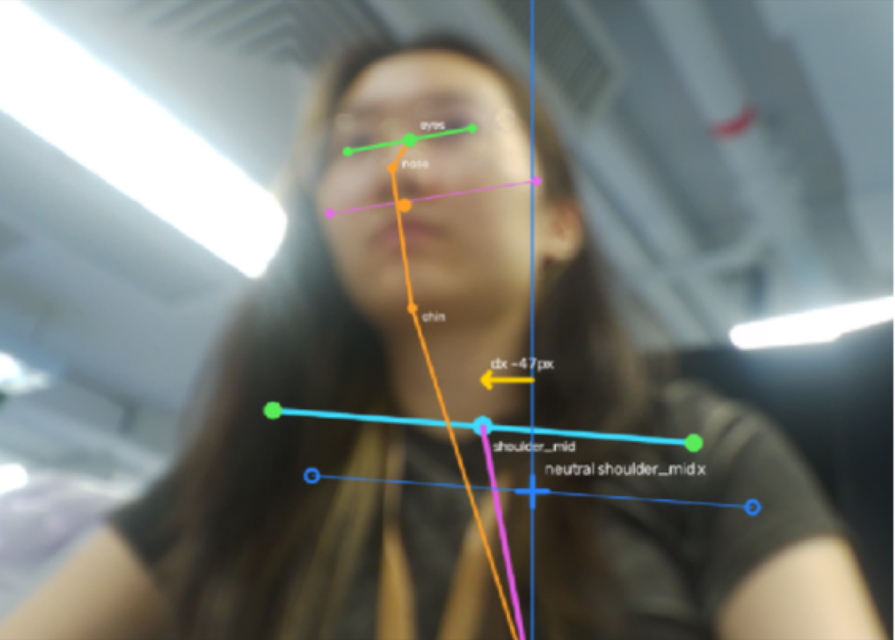
VERSION 1MediaPipe-based estimationFast, interpretable landmark tracking+MediaPipe detects upper-body and facial landmarks, then compares them with the user's calibrated baseline.
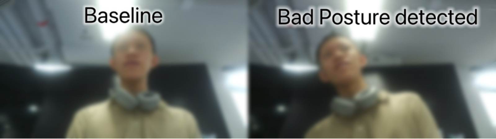
VERSION 2VLM-assisted validationValidate sustained posture changes+When MediaPipe flags a possible change, the calibrated baseline and detected posture frames are sent to a cloud VLM via API.
OUTCOME
TILT explores an alternative to explicit ergonomic reminders: a calm, physical interface that supports healthier posture through implicit interaction.
View project facts & design process ↗If you are interested in this project or have suggestions to share, we would be grateful to hear from you at u3659013@connect.hku.hk.